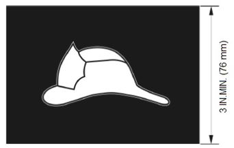

This chapter establishes the minimum safety requirements for, and governs the design, construction, installation, alteration, maintenance, inspection, test and operation of, elevators, dumbwaiters, escalators, moving walks, industrial lifts and loading ramps, mechanical parking equipment, console or stage lifts, power operated scaffolds, amusement devices, platform lifts, and special hoisting and conveying equipment. This chapter and all the provisions of this code for new installations shall also apply to elevators in existing buildings moved to new hoistways. High-rise buildings elevators shall also conform to the provisions of Section 403 of this code.
Exception: Personnel and material hoists used for construction operations subject to the requirements of Chapter 33.
3001.2 Referenced standards.
Except as otherwise provided for in this code, the design, construction, installation, alteration, repair and maintenance of elevators and conveying systems and their components shall conform to ASME A17.1/CSA B44 as modified by Appendix K, Chapter K1, ASME A17.2, ASME A17.3 as modified by Appendix K, Chapter K3, ASME A17.5, ASME A17.6, ASME A17.7/CSA B44.7, ASME A18.1, ASME A90.1, ASME B20.1 as modified by Appendix K, Chapter K2, ANSI A10.4, ANSI E1.46, BSR 1.42, ANSI/ICC A117.1, and ASCE 24 for construction in flood hazard areas established in Appendix G. Where this code makes reference to the nationally recognized standards ASME A17.1/CSA B44, ASME A17.3, and ASME B20.1, such standard(s) shall be as modified for New York City in accordance with Appendix K of this code.
3001.3 Accessibility.
The following elevators and lifts shall conform to ICC A117.1:
1. Passenger elevators, including destination-oriented elevators, required to be accessible by Chapter 11;
2. Limited-Use/Limited-Application (LULA) elevators permitted to be installed on an accessible route pursuant to Section 1109.7.1;
3. Platform lifts permitted to be installed on an accessible route pursuant to Section 1109.8;
4. Private residence elevators serving within an individual dwelling unit in Occupancy Groups R-2 and R-3 occupancies on an accessible route; and
5. Elevators provided in accordance with Sections 3002.4.3.2 and 3002.4.3.3.
(Am. L.L. 2023/077, 6/11/2023, eff. 6/11/2023)
Editor's note: For related unconsolidated provisions, see Appendix A at L.L. 2023/077.
3001.4 Change in use.
A change in use of an elevator from freight to passenger, passenger to freight, or from one freight class to another freight class shall comply with Section 8.7 of ASME A17.1/CSA B44.
3001.5 Piping or ductwork.
No piping or ductwork, except as permitted by ASME A17.1/CSA B44, Section 2.8, shall be permitted within hoistway or elevator enclosures except:
1. As required for the elevator installation; and
2. Low voltage wiring less than 50 volts required for fire alarm systems required by this code.
3001.6 Elevator mirrors.
A mirror shall be installed in each self-service passenger elevator in multiple dwellings. Such mirror shall be affixed and maintained in a manner sufficient to enable persons entering such elevator to view the inside thereof prior to entry to determine whether any person is in the elevator.
3001.7 Car switch operation.
Elevators with car switch operation (manual operation) shall be provided with a signal system by means of which signals can be given from any landing whenever the elevator is desired at that landing.
3001.8 Prohibited devices.
The following devices shall be prohibited:
3001.8.1 Manlifts.
The installation of manlifts is prohibited.
3001.8.2 Sidewalk elevators.
The installation of sidewalk elevators located outside the street line is prohibited
3001.9 Approved equipment.
All equipment listed in ASME A17.1/CSA B44, Section 8.3 as modified by New York City Building Code, Appendix K, Chapter K1, shall be listed by an approved agency in accordance with Section 28-113.2.3 of the Administrative Code, Section 8.3.1 of ASME A17.1/CSA B44, and the rules of the department, and shall be approved by the commissioner.
3001.10 Construction documents.
Applications for elevator, escalator, moving walkway and stairway, dumbwaiter, and similar equipment shall contain construction documents that include the following:
1. The location of all machinery, switchboards, junction boxes, and reaction points, with loads indicated;
2. The details of all hoistway conditions including bracket spacing;
3. The estimated maximum vertical forces on the guide rails on application of the safety device;
4. In the case of freight elevators for class B or C loading, the horizontal forces on the guide-rail faces during loading and unloading; and the estimated maximum horizontal forces in a postwise direction on the guide-rail faces on application of the safety device;
5. The size and weight per foot of any rail reinforcements where provided;
6. Compliance with the accessibility features of this code;
7. The details of capability of the withstanding forces (impact) on door entrance assembly and retaining devices;
8. The withstanding hourly fire rating of the hoistway and the hoistway door assembly;
9. The impact loads imposed on machinery and sheave beams, supports and floors or foundations;
10. The impact load on buffer supports due to buffer engagement at the maximum permissible speed and load;
11. Where compensation tie down is applied, the load on the compensation tie down supports; and
12. The total static and dynamic loads from the governor, buffer and tension system.
3001.11 Special provisions for prior code buildings.
Prior code buildings shall be permitted to comply with Section 3001.11.1.
3001.11.1 Existing shafts.
Elevators cabs installed in existing shafts shall be permitted to be smaller than that required by this chapter where necessary to fit in the existing shaft.
Exception: An existing elevator shaft shall be enlarged or a new elevator shaft shall be constructed to accommodate an elevator cab in compliance with Chapter 11 where the entire building is required to be accessible pursuant to either Item 1 of Section 1101.3.1, or Section 1101.3.2.
Section BC 3002: Hoistway Enclosures
3002.1 Hoistway enclosure protection.
Elevator, dumbwaiter and other hoistway enclosures shall be shaft enclosures complying with Section 713.
3002.1.1 Definitions.
The following terms are defined in Chapter 2:
HOISTWAY.
ZERO CLEARANCE VESTIBULE.
3002.1.2 Opening protectives.
Openings in hoistway enclosures shall be protected as required in Chapter 7.
Exception: The elevator car doors and the associated hoistway enclosure doors at the floor level designated for recall in accordance with Section 3003.2 shall be permitted to remain open during Phase I Emergency Recall Operation in accordance with ASME A17.1/CSA B44, as modified by Appendix K, Chapter K1.
3002.1.3 Hardware.
Hardware on opening protectives shall be of an approved type installed as tested, except that approved interlocks, mechanical locks and electric contacts, door and gate electric contacts and door-operating mechanisms shall be exempt from the fire test requirements.
3002.2 Number of elevator cars in a hoistway.
1. Where four or more elevator cars serve all or the same portion of a building, the elevators shall be located in not fewer than two separate hoistways.
2. Where five or more elevators serve the same portion of a building, not more than four elevator cars shall be located in any single hoistway enclosure.
3. Elevators that service different rises shall be located in separate hoistways.
3002.3 Emergency signs.
A sign shall be posted and maintained on every floor at the elevator landing. The sign shall read "IN FIRE EMERGENCY, DO NOT USE ELEVATOR. USE THE EXIT STAIRS." The lettering shall be at least 1/2 inch (13 mm) block letters in red with white background or as otherwise approved by the commissioner. Such lettering shall be properly spaced to provide good legibility. The sign shall also contain a diagram showing the location where it is posted and the location and letter identification of the stairs on the floor. The sign shall be at least 10 inches by 12 inches (255 mm by 305 mm), located directly above a call button and securely attached to the wall or partition. The top of such sign shall not be more than 6 feet (1829 mm) above the floor level. The diagram on such sign may be omitted provided that signs containing such diagram are posted in conspicuous places on the respective floor. In such case, the sign at the elevator landing shall be at least 2 1/2 inches by 10 inches (64 mm by 254 mm) and the diagram signs shall be at least 8 inches by 12 inches (203 mm by 305 mm).
3002.3.1 Stair and elevator identification signs.
Each stair and each bank of elevators shall be identified by an alphabetic letter. A sign indicating the letter of identification for the elevator bank shall be posted and maintained at each elevator landing directly above or as part of the sign specified in Section 3002.3. The stair identification sign shall be posted and maintained on the occupancy side of the stair door. The letter on the sign shall be at least 3 inches (76 mm) high, of bold type and of contrasting color from the background. Such signs shall be securely attached.
Exceptions:
1. The emergency sign shall not be required for elevators that are part of an accessible means of egress complying with Section 1009.4.
2. The emergency sign shall not be required for elevators that are used for occupant self-evacuation in accordance with Section 3008.
3002.4 Elevator required.
In buildings five stories in height or more and buildings with four or more stories below grade plane, at least one elevator shall provide access to all floors.
3002.4.1 Standby power required for elevators.
Emergency power shall be provided to elevators in the following categories:
1. Elevator(s) in high-rise buildings covered by Section 403.1, other than Group R-2 occupancies, as required by Section 403.4.8.4.1;
2. Elevator(s) in high-rise buildings in Group R-2 occupancies more than 125 feet (38 100 mm) in height, as required by Section 403.4.8.4.2;
3. Elevator(s) in underground buildings, as required by Section 405.8;
4. Elevator(s) in Groups B, E, and R-1 occupancies that are subject to Section 2702.2.20; and
5. Elevator(s) serving as accessible means of egress pursuant to Section 1009.4.
Editor's note: For related unconsolidated provisions, see Appendix A at L.L. 2014/051.
3002.4.2 Elevator car to accommodate ambulance stretcher.
Where elevators are provided in buildings five or more stories above, or four or more stories below grade plane, or underground buildings as described in Section 405.1, not fewer than one elevator subject to Section 3003.3 shall be provided with an elevator car of such a size and arrangement to accommodate an ambulance stretcher 24 inches by 84 inches (610 mm by 2134 mm), with not less than 5 inch (127 mm) radius corners, in the horizontal, open position and shall be identified by the international symbol for emergency medical services (star of life). The symbol shall be not less than 3 inches (76 mm) in height and shall be placed on both jambs of the hoistway entrances on each floor. Standby power shall be required for such an elevator if it serves a building subject to Section 3002.4.1.
Exceptions:
1. An elevator serving not more than one individual dwelling unit in a building pursuant to Section 3002.4.3.1 or 3002.4.3.2.
2. Limited-Use/Limited-Application (LULA) elevators (25 feet maximum rise).
3002.4.3 Elevator serving individual dwelling unit.
Elevators provided in individual dwelling units in buildings in Occupancy Groups R-2 and R-3 shall comply with Section 3002.4.3.1 through 3002.4.3.3, as applicable.
3002.4.3.1 Maximum rise of 60 feet (18 288 mm).
A private residence elevator with 60 feet (18 288 mm) of maximum rise shall be permitted to serve within an individual dwelling unit provided the elevator car is in compliance with ASME A17.1/CSA B44, and Section 3001.3 of this code.
3002.4.3.2 Rise of over 60 feet (18 288 mm) but not more than 75 feet (22 860 mm).
An elevator with 60 feet (18 288 mm) but not more than 75 feet (22 860 mm) of maximum rise shall be permitted to serve within an individual dwelling unit provided the elevator car is in compliance with Parts 2 or 3 of ASME A17.1/CSA B44 and Section 3001.3 of this code even if it does not serve on an accessible route within the dwelling unit.
3002.4.3.3 Maximum rise of more than 75 feet (22 860 mm).
A passenger elevator shall be required to serve within an individual dwelling unit where the maximum rise is over 75 feet (22 860 mm). Such elevator shall comply with ASME A17.1/CSA B44, and Sections 3001.3 and 3002.4.2 of this code even if it does not serve on an accessible route within the dwelling unit.
3002.5 Emergency doors.
Where an elevator is installed in a single blind hoistway or on the outside of a building, there shall be installed in the blind portion of the hoistway or blank face of the building, an emergency door in accordance with ASME A17.1/CSA B44.
3002.6 Prohibited doors.
Doors, other than hoistway doors and the elevator car door, shall be prohibited at the point of egress from an elevator car unless such doors are readily openable from the car side without a key, tool, special knowledge or effort.
3002.7 Common enclosure with stairway.
Elevators shall not be in a common shaft enclosure with a stairway.
Exception: Elevators within open parking garages need not be separated from stairway enclosures.
3002.8 Glass in elevator enclosures.
Glass in elevator enclosures shall comply with ASME A17.1/CSA B44 and Section 2409.2 of this code.
3002.9 Plumbing and mechanical systems.
Plumbing and mechanical systems shall not be located in an elevator hoistway enclosure.
Exceptions:
1. Floor drains, sumps and sump pumps shall be permitted at the base of the hoistway enclosure provided they are indirectly connected to the plumbing system.
2. Sprinklers shall be permitted when otherwise required.
Section BC 3003: Emergency Operations
3003.1 Standby power.
In buildings and structures where standby power is required or furnished to operate an elevator, the operation shall be in accordance with Sections 3002.4.1 and 3003.1.1 through 3003.1.4.
3003.1.1 Manual transfer.
Standby power shall be manually transferable to all elevators in each bank.
3003.1.2 One elevator.
Where only one elevator is installed, the elevator shall automatically transfer to standby power within 60 seconds after failure of normal power.
3003.1.3 Two or more elevators.
Where two or more elevators are controlled by a common operating system, all elevators shall automatically transfer to standby power within 60 seconds after failure of normal power where the standby power source is of sufficient capacity to operate all elevators at the same time. Where the standby power source is not of sufficient capacity to operate all elevators at the same time, all elevators shall transfer to standby power in sequence, return to the designated landing and disconnect from the standby power source. For buildings with multiple banks of elevators, at least one elevator from each bank shall remain operable from the standby power source.
3003.1.4 Venting.
Where standby power is connected to elevators, the machine room ventilation or air conditioning shall be connected to the standby power source.
3003.2 Fire fighters' emergency operation.
Elevators shall be provided with Phase I emergency recall operation and Phase II emergency in-car operation where required by ASME A17.1/CSA B44 as modified by Appendix K.
3003.3 Elevator in readiness.
Requirements for elevator in readiness shall be as defined in Sections 3003.3.1 through 3003.3.2.
3003.3.1 Elevator in readiness for Fire Department emergency access.
Except as provided in Section 3003.3.2, in buildings five stories in height or more, underground buildings as described in Section 405.1, and high-rise buildings, at least one elevator shall be kept available for immediate use by the Fire Department during all hours of the night and day, including holidays, Saturdays and Sundays. The elevator in readiness shall serve all floors of the building. For buildings where a Fire Service Access Elevator (FSAE) is provided, the FSAE shall serve all floors of the building. There shall be available at all times a person competent to operate the elevator. However, an attendant shall not be required for buildings with occupied floors of 150 feet (45 720 mm) or less above the lowest level of the Fire Department vehicle access that have elevators with automatic or continuous pressure operation with keyed switches meeting the requirements of ASME A17.1/CSA B44 as modified by Appendix K so as to permit sole use of the elevators by the Fire Department.
3003.3.2 Number of Elevators.
A number of elevators shall be kept available at every floor for the sole use of the Fire Department as required by Section 3003.3.2.1 and Section 3003.3.2.2. This requirement shall apply to the following types of buildings:
1. High-rise buildings with occupancies classified in Groups A, B, E, I, F, H, M and S;
2. Buildings with Group B occupancies with a gross area of 200, 000 square feet (18 581 m
2
); and
3. Buildings with a main use or dominant occupancy in Group R-1 or R-2.
Exception: In buildings that are five stories or more in height but are not one of the types of buildings described in Item 1 through 3 in Section 3003.3.2, at least one elevator car in such buildings shall be kept available for sole use by the Fire Department.
3003.3.2.1 Three or fewer elevators.
Where a floor is serviced by three or fewer elevator cars, every car shall be kept available for sole use by the Fire Department.
3003.3.2.2 More than three elevators.
Where a floor is serviced by more than three elevator cars, at least three elevator cars with a total rated load capacity of not less than 6,000 pounds (2722 kg) shall be kept available for sole use by the Fire Department. Such cars shall include not more than two cars that service all floors and at least one other car in another bank servicing that floor. If the total load capacity of all cars servicing the floor is less than 6,000 pounds (2722 kg), all such cars shall be kept available for sole use by the Fire Department.
3003.3.3 Operation and control.
Elevators that are kept for the sole use of the Fire Department and that have automatic or continuous pressure operation shall be controlled by keyed switches meeting the requirements of ASME A17.1/CSA B44.
3003.3.4 Other elevator cars.
In high rise buildings classified in occupancy groups A, B, E, F, H, I, M and S, in low-rise buildings classified in occupancy group B with a gross area of 200,000 square feet (18 581 m
2
) or more and in buildings classified in occupancy group R-1 or R-2, all other automatically operated cars shall have manual operation capability.
Section BC 3004: Conveying Systems
3004.1 General.
Escalators, moving walks, conveyors, and amusement devices shall comply with the provisions of Sections 3004.2 through 3004.5 as applicable.
3004.2 Escalators and moving walks.
Escalators and moving walks shall be constructed of approved noncombustible and fire-retardant materials. This requirement shall not apply to electrical equipment, wiring, wheels, handrails and the use of 1/28-inch (0.9 mm) wood veneers on balustrades backed up with noncombustible materials.
3004.2.1 Enclosure.
Escalator floor openings shall be enclosed with shaft enclosures complying with Section 713.
3004.2.2 Escalators.
Where provided in below-grade transportation stations, escalators shall have a clear width of not less than 32 inches (813 mm).
Exception: The clear width is not required in existing facilities undergoing alterations.
3004.3 Conveyors.
Conveyors and conveying systems shall comply with ASME B20.1.
3004.3.1 Enclosure.
Conveyors and related equipment connecting successive floors or levels shall be enclosed with shaft enclosures complying with Section 713.
3004.3.2 Conveyor safeties.
Power-operated conveyors, belts and other material-moving devices shall be equipped with automatic limit switches that will shut off the power in an emergency and automatically stop all operation of the device.
3004.4 Reserved.
3004.5 Amusement devices.
Amusement devices shall comply with rules of the department.
Section BC 3005: Machinery Spaces, Machine Rooms, Control Spaces and Control Rooms
3005.1 Access.
An approved means of access shall be provided to elevator machine rooms, control rooms, control spaces and machinery spaces.
3005.2 Temperature control.
Elevator machine rooms, machinery spaces that contain the driving machine, and control rooms or spaces that contain the operation or motion controller for elevator operation shall be provided with an independent ventilation or air-conditioning system to protect against the overheating of the electrical equipment. The system shall be capable of maintaining temperatures within the range established for the elevator equipment.
3005.3 Pressurization.
The elevator machine room, control rooms or control space with openings into a pressurized elevator hoistway shall be pressurized upon activation of a heat or smoke detector located in the elevator machine room, control room or control space.
3005.4 Machine rooms, control rooms, machinery spaces, and control spaces.
Elevator machine rooms, control rooms, control spaces and machinery spaces shall be enclosed with fire barriers constructed in accordance with Section 707 or horizontal assemblies constructed in accordance with Section 711, or both. The fire-resistance rating shall be not less than the required rating of the hoistway enclosure served by the machinery. Openings in the fire barriers shall be protected with assemblies having a fire protection rating not less than that required for the hoistway enclosure doors.
Exception: For other than fire service access elevators and occupant evacuation elevators, where machine rooms, machinery spaces, control rooms and control spaces do not abut and have no openings to the hoistway enclosure they serve, the fire barriers constructed in accordance with Section 707 or horizontal assemblies constructed in accordance with Section 711, or both, shall be permitted to be reduced to a 2-hour fire-resistance rating.
3005.5 Sprinklers and shunt trip.
Sprinklers are not permitted in elevator machine rooms, machine spaces, control rooms and control spaces. Where elevator hoistways are protected with automatic sprinklers, a means installed in accordance with Section 21.4 of NFPA 72 as modified by Appendix Q shall be provided, where required, to disconnect automatically the main line power supply to the affected elevator prior to the application of water. This means shall not be self-resetting. The activation of automatic sprinklers outside the hoistway, machine room, machinery space, control room or control space shall not disconnect the main line power supply.
3005.6 Plumbing systems.
Plumbing systems not related to elevator machinery shall not be located in elevator equipment rooms.
3005.7 Elevator machinery noise control in multiple dwellings.
Gear-driven machinery, gearless machinery, and motor generators located in an elevator machinery room or shaft on a roof, or on a floor other than a floor on grade, shall be supported on vibration isolator pads having a minimum thickness of 1/2 inch (12.7 mm).
Section BC 3006: Elevator Lobbies and Hoistway Opening Protection
3006.1 Elevator, dumbwaiter and other hoistways.
Elevator, dumbwaiter, and other hoistway enclosures shall be constructed in accordance with Section 713 and Chapter 30.
3006.1.1 Elevator lobby.
Except as provided by Sections 403.6.1 and 403.6.2, an enclosed elevator lobby shall be provided in high-rise buildings at the following locations:
1. Elevators opening onto a fire-resistance-rated corridor, in all occupancy groups.
2. Elevators serving Group B occupancies. Elevators that serve four or more stories that contain space classified in occupancy Group B, inclusive of any lobby or entrance level, shall provide elevator lobbies at every level served by such elevator.
The lobby enclosure shall separate the elevator shaft enclosure doors from each floor by smoke partitions. In addition to the requirements in Section 710 for smoke partitions, doors protecting openings in the elevator lobby enclosure walls shall also comply with Section 710.5.2.3 and penetrations of the elevator lobby enclosure by ducts and air transfer openings shall be protected in accordance with Section 710.8. Elevator lobbies shall have at least one means of egress complying with Chapter 10 and other provisions within this code. Access to an exit on any story through an elevator lobby shall be permitted provided that access to at least one other required exit does not require passing through the elevator lobby.
Exceptions:
1. Enclosed elevator lobbies are not required at the street floor, provided the entire street floor is equipped with an automatic sprinkler system in accordance with Section 903.3.1.1.
2. Elevators not required to be located in a shaft in accordance with Section 712 are not required to have enclosed elevator lobbies.
3. Enclosed elevator lobbies are not required where zero-clearance doors are provided at the hoistway opening in accordance with Section 3002.6. Such doors shall be tested in accordance with UL 1784 without an artificial bottom seal.
4. Enclosed elevator lobbies are not required on floors with less than 2,500 square feet (232 m
2
), provided that the commissioner accepts an alternative design or construction method that accomplishes the purposes of this section, or provided that the commissioner determines that compliance with this section is impracticable in whole or in part, whereby the commissioner may authorize an exemption from the requirements of this section.
5. Enclosed elevator lobbies are not required on Group R-2 occupied floors.
6. Enclosed elevator lobbies are not required where the elevator hoistway is pressurized in accordance with Section 3006.1.2.
7. Enclosed elevator lobbies are not required where the elevator serves only open parking garages in accordance with Section 406.5.
3006.1.1.1 Areas of rescue assistance.
Areas of rescue assistance shall be provided as required in Section 1009.6.
3006.1.2 Enclosed elevator lobby.
Where elevator hoistway pressurization is provided in lieu of required enclosed elevator lobbies, the pressurization system shall comply with this section except as provided by Sections 403.6.1 and 403.6.2.
3006.1.2.1 Pressurization requirements.
Elevator hoistways shall be pressurized to maintain a minimum positive pressure of 0.10 inches of water (25 Pa) and a maximum positive pressure of 0.25 inches of water (67 Pa) with respect to adjacent occupied space on all floors. This pressure shall be measured at the midpoint of each hoistway door, with all elevator cars at the floor of recall and all hoistway doors on the floor of recall open and all other hoistway doors closed. The opening and closing of hoistway doors at each level must be demonstrated during this test. The supply air intake shall be from an outside, uncontaminated source located a minimum distance of 20 feet (6096 mm) from any air exhaust system or outlet.
3006.1.2.2 Rational analysis.
A rational analysis complying with Section 909.4 shall be submitted with the construction documents.
3006.1.2.3 Ducts for system.
Any duct system that is part of the pressurization system shall be protected with the same fire-resistance rating as required for the elevator shaft enclosure.
3006.1.2.4 Fan system.
The fan system provided for the pressurization system shall be as required by this section.
3006.1.2.4.1 Fire resistance.
When located within the building, the fan system that provides the pressurization shall be protected with the same fire-resistance rating required for the elevator shaft enclosure.
3006.1.2.4.2 Smoke detection.
The fan system shall be equipped with a smoke detector that will automatically shut down the fan system when smoke is detected within the system.
3006.1.2.4.3 Separate systems.
A separate fan system shall be used for each elevator hoistway.
3006.1.2.4.4 Fan capacity.
The supply fan shall either be adjustable with a capacity of at least 1,000 cfm (0.4719 m
3
/s) per door, or that specified by a registered design professional to meet the requirements of a designed pressurization system.
3006.1.2.5 Standby power.
The pressurization system shall be provided with standby power from the same source as other required emergency systems for the building.
3006.1.2.6 Activation of pressurization system.
The elevator pressurization system shall be activated upon activation of the building fire alarm system or upon activation of the elevator lobby smoke detectors. Where both a building fire alarm system and elevator lobby smoke detectors are present, each shall be independently capable of activating the pressurization system.
3006.1.2.7 Special inspection.
Special inspection for performance shall be required in accordance with Section 909.18.8. System acceptance shall be in accordance with Section 909.19.
3006.1.2.8 Marking and identification.
Detection and control systems shall be marked in accordance with Section 909.14.
3006.1.2.9 Control diagrams.
Control diagrams shall be provided in accordance with Section 909.15.
3006.1.2.10 Control panel.
A fire-fighter's smoke control panel complying with Section 909.16 shall be provided.
3006.1.2.11 System response time.
Hoistway pressurization systems shall comply with the requirements for smoke control system response time in Section 909.17.
Section BC 3007: Fire Service Access Elevator
3007.1 General.
Where required by Section 403.6.1, every floor of the building shall be served by a fire service access elevator complying with Sections 3007.1 through 3007.8. Except as modified in this section, the fire service access elevator shall be installed in accordance with this chapter and ASME A17.1/CSA B44 as modified by Appendix K, Chapter K1.
3007.2 Automatic sprinkler system.
The building shall be equipped throughout with an automatic sprinkler system in accordance with Section 903.3.1.1, except as otherwise permitted by Section 903.3.1.1.1 and as prohibited by Section 3007.2.1.
3007.2.1 Prohibited locations.
Automatic sprinklers shall not be installed in elevator machine rooms, machinery spaces, control rooms, control spaces, and elevator hoistways of fire service access elevators.
3007.2.2 Sprinkler system monitoring.
The sprinkler system shall have a sprinkler control valve supervisory switch and water-flow-initiating device provided for each floor that is monitored by the building's fire alarm system.
3007.3 Water protection.
An approved method to prevent water from infiltrating into the hoistway enclosure from the operation of the automatic sprinkler system shall be provided:
1. Where an elevator lobby is provided in accordance with Section 3007.6, with respect to the automatic sprinkler system outside of the enclosed elevator lobby.
2. Where a corridor is provided in accordance with Section 3007.6, Exception 2, with respect to the automatic sprinkler system outside of the corridor and with respect to the automatic sprinklers inside the corridor that are beyond 10 feet of the entrance to the hoistway enclosure of the fire service access elevator.
3. Where neither an enclosed elevator lobby nor a corridor is provided in accordance with Section 3007.6, Exception 3, with respect to the automatic sprinklers that are located beyond 10 feet of the entrance to the hoistway enclosure of the fire service access elevator.
3007.4 Reserved.
3007.5 Hoistway enclosures.
The fire service access elevator hoistway shall be located in a shaft enclosure complying with Section 713.
3007.5.1 Structural integrity of hoistway enclosures.
The fire service access elevator hoistway enclosure shall comply with Sections 403.2.3.1 through 403.2.3.4.
3007.5.2 Hoistway lighting.
When fire-fighters' emergency operation is active, the entire height of the hoistway shall be illuminated at not less than 1 footcandle (11 lux) as measured from the top of the car of each fire service access elevator.
3007.6 Fire service access elevator lobby.
The fire service access elevator shall open into a fire service access elevator lobby in accordance with Sections 3007.6.1 through 3007.6.5. Egress is permitted through the elevator lobby in accordance with Item 1 of Section 1016.2.
Exceptions:
1. Where a fire service access elevator has two entrances onto a floor, the second entrance shall be permitted to open into an elevator lobby in accordance with Section 3006.1.1.
2. A fire service access elevator lobby shall not be required on stories where the elevator opens to a corridor enclosed with a fire barrier, provided all doors opening onto such corridor are smoke and draft controlled doors complying with Section 716.5.3.1 with the UL 1784 test conducted without the artificial bottom seal.
3. A fire service access elevator lobby shall not be required on stories that are less than 3,000 square feet (279 m
2
) containing only Group R-2 occupancies.
(Am. L.L. 2023/077, 6/11/2023, eff. 6/11/2023)
Editor's note: For related unconsolidated provisions, see Appendix A at L.L. 2023/077.
3007.6.1 Reserved.
3007.6.2 Lobby enclosure.
The fire service access elevator lobby shall be enclosed with a smoke barrier having a fire-resistance rating of not less than 1 hour, except that lobby doorways shall comply with Section 3007.6.3.
Exception: Enclosed fire service access elevator lobbies are not required at the levels of exit discharge.
3007.6.3 Lobby doorways.
Other than doors to the hoistway, elevator control room or elevator control space, each doorway to a fire service access elevator lobby shall be provided with a 3/4-hour fire door assembly complying with Section 716.5. The fire door assembly shall comply with the smoke and draft control door assembly requirements of Section 716.5.3.1 with the UL 1784 test conducted without the artificial bottom seal.
3007.6.4 Lobby size.
The enclosed fire service access elevator lobby shall be a not less than 120 square feet (11 m
2
) in an area with a minimum dimension of 6 feet (1828 mm).
3007.6.5 Fire service access elevator symbol.
A pictorial symbol of a standardized design designating which elevators are fire service access elevators shall be installed on each side of the hoistway door frame on the portion of the frame at right angles to the fire service access elevator lobby. The fire service access elevator symbol shall be designed as shown in Figure 3007.6.5 and shall comply with the following:
1. The fire service access elevator symbol shall be not less than 3 inches (76 mm) in height.
2. The helmet shall contrast with the background, with either a light helmet on a dark background or a dark helmet on a light background.
3. The vertical center line of the fire service access elevator symbol shall be centered on the hoistway door frame. Each symbol shall be not less than 78 inches (1981 mm), and not more than 84 (2134 mm) inches above the finished floor at the threshold.

Figure 3007.6.5 Fire Service Access Elevator Symbol
3007.7 Elevator system monitoring.
The fire service access elevator shall be continuously monitored at the fire command center by a standard emergency service interface system meeting the requirements of NFPA 72 as modified by Appendix Q.
3007.8 Electrical power.
The following features serving each fire service access elevator shall be supplied by both normal power and Type 60/Class 6/Level 1 standby power:
1. Elevator equipment.
2. Elevator hoistway lighting.
3. Ventilation and cooling equipment for elevator machine rooms, control rooms, machine spaces and machinery/control spaces.
4. Elevator car lighting.
Exception: Standby power relying on natural gas as a fuel source need not be Class 6.
3007.8.1 Protection of wiring or cables.
Wires or cables that are located outside of the elevator hoistway and machine room and that provide normal or standby power, control signals, communication with the car, lighting, heating, air conditioning, ventilation and fire-detecting systems to fire service access elevators shall be protected by construction having a fire-resistance rating of not less than 2 hours, shall be a circuit integrity cable having a fire-resistance rating of not less than 2 hours, or shall be protected by a listed electrical protective system having a fire-resistance rating of not less than 2 hours.
Exception: Wiring and cables to control signals are not required to be protected provided that wiring and cables do not serve Phase II emergency in-car operations.
3007.9 Reserved.
Section BC 3008: Occupant Evacuation Elevators
3008.1 General.
Where elevators are to be used for occupant self-evacuation during fires, all passenger elevators for general public use shall comply with Sections 3008.1 through 3008.10. Where other elevators are used for occupant self-evacuation, those elevators shall comply with these sections
3008.1.1 Additional exit stairway.
Where an additional means of egress is required in accordance with Section 403.5.2, an additional exit stairway shall not be required to be installed in buildings provided with occupant evacuation elevators complying with Section 3008.1.
3008.1.2 Fire safety and emergency action plans.
The building shall have an approved fire safety and emergency action plans in accordance with the applicable requirements of the New York City Fire Code. The fire safety and emergency action plans shall incorporate specific procedures for the occupants using evacuation elevators.
3008.1.3 Operation.
The occupant evacuation elevators shall be used for occupant self-evacuation in accordance with the occupant evacuation operation requirements as per ASME A17.1/CSA B44 as modified by Appendix K of this code and the building's fire safety and emergency action plans.
3008.2 Reserved.
3008.3 Automatic sprinkler system.
The building shall be protected throughout by an approved, electrically-supervised automatic sprinkler system in accordance with Section 903.3.1.1, except as otherwise permitted by Section 903.3.1.1.1 and as prohibited by Section 3008.3.1.
3008.3.1 Prohibited locations.
Automatic sprinklers shall not be installed in elevator machine rooms, machinery spaces, control rooms, control spaces and elevator hoistways of occupant evacuation elevators.
3008.3.2 Sprinkler system monitoring.
The sprinkler system shall have a sprinkler control valve supervisory switch and water flow initiating device provided for each floor that is monitored by the building's fire alarm system.
3008.4 Water protection.
An approved method to prevent water from infiltrating into the hoistway enclosure from the operation of the automatic sprinkler system outside the enclosed occupant evacuation elevator lobby shall be provided.
3008.5 Reserved.
3008.6 Hoistway enclosure protection.
Occupant evacuation elevator hoistways shall be located in shaft enclosures complying with Section 713.
3008.6.1 Structural integrity of hoistway enclosures.
Occupant evacuation elevator hoistway enclosures shall comply with Sections 403.2.3.1 through 403.2.3.4.
3008.7 Occupant evacuation elevator lobby.
The occupant evacuation elevators shall open into an elevator lobby in accordance with Sections 3008.7.1 through 3008.7.6. Egress is permitted through the elevator lobby in accordance with Item 1 of Section 1016.2.
3008.7.1 Access to Interior exit stairway or ramp.
The occupant evacuation elevator lobby shall have direct access from the enclosed elevator lobby to an interior exit stairway or ramp.
Exception: Access to an interior exit stairway or ramp shall be permitted to be through a protected path of travel protected with smoke partitions complying with Section 711. The protected path shall be separated from the enclosed elevator lobby through an opening protected by a smoke and draft control assembly in accordance with Section 716.5.3.
3008.7.2 Lobby enclosure.
The occupant evacuation elevator lobby shall be enclosed with a smoke barrier having a fire-resistance rating of not less than 1 hour, except that lobby doorways shall comply with Section 3008.7.3.
Exception: Enclosed occupant evacuation elevator lobbies are not required at the levels of exit discharge.
3008.7.3 Lobby doorways.
Other than doors to the hoistway, and elevator machine rooms, machinery spaces, control rooms, and control spaces within the lobby enclosure smoke barrier, each doorway to an occupant evacuation elevator lobby shall comply with the smoke and draft control assembly requirements of Section 716.5.3.1 with the UL 1784 test conducted without the artificial bottom seal. Such doorway shall not be required to have a fire-resistance rating.
3008.7.3.1 Vision panel.
A vision panel shall be installed in each door assembly protecting the lobby doorway. The vision panel shall consist of glazing and shall be located to furnish clear vision of the occupant evacuation elevator lobby.
3008.7.3.2 Door closing.
Each door assembly protecting the lobby doorway shall be automatic closing upon receipt of any fire alarm signal from the emergency voice/alarm communication system serving the building.
3008.7.4 Lobby size.
Each occupant evacuation elevator lobby shall have minimum floor area as follows:
1. The occupant evacuation elevator lobby floor area shall accommodate, at 3 square feet (0.28 m
2
) per person, not less than 25 percent of the occupant load of the floor area served by the lobby.
2. The occupant evacuation elevator lobby floor area shall accommodate one wheelchair space of 30 inches by 48 inches (760 mm by 1220 mm) for each 50 persons, or portion thereof, of the occupant load of the floor area served by the lobby.
Exception: The size of lobbies serving multiple banks of elevators shall have the minimum floor area approved on an individual basis and shall be consistent with the building's fire safety and emergency action plans.
3008.7.5 Signage.
An approved sign indicating elevators are suitable for occupant self-evacuation shall be posted on all floors adjacent to each elevator call station serving occupant evacuation elevators.
3008.7.6 Two-way communication system.
A two-way communication system shall be provided in each occupant evacuation elevator lobby for the purpose of initiating communication with the fire command center or an alternate location approved by the Fire Department. The two-way communication system shall be designed and installed in accordance with Sections 1009.8.1 and 1009.8.2.
3008.8 Elevator system monitoring.
The occupant evacuation elevators shall be continuously monitored at the fire command center or a central control point approved by the Fire Department and arranged to display all of the following information:
1. Floor location of each elevator car.
2. Direction of travel of each elevator car.
3. Status of each elevator car with respect to whether it is occupied.
4. Status of normal power to the elevator equipment, elevator machinery and electrical apparatus cooling equipment where provided, elevator machine room, control room and control space ventilation and cooling equipment.
5. Status of emergency or standby power system that provides backup power to the elevator equipment, elevator machinery and electrical cooling equipment where provided, elevator machine room, control room and control space ventilation and cooling equipment.
6. Activation of any fire alarm initiating device in any elevator lobby, elevator machine room, machine space containing a motor controller or electric driving machine, control space, control room or elevator hoistway.
3008.8.1 Elevator recall.
The fire command center or an alternate location approved by the Fire Department shall be provided with the means to manually initiate a Phase I Emergency Recall of the occupant evacuation elevators in accordance with ASME A17.1/CSA B44 as modified by Appendix K of this code.
3008.9 Electrical power.
The following features serving each occupant evacuation elevator shall be supplied by both normal power and Type 60/Class 6/Level 1 standby power:
1. Elevator equipment.
2. Ventilation and cooling equipment for elevator machine rooms, control rooms, machinery and control spaces.
3. Elevator car lighting.
Exceptions:
1. Standby power relying on natural gas as a fuel source need not be Class 6.
2. Where Exception 2 of Section 403.5.2 is utilized, the standby power generating equipment need only be sized to satisfy the loads required to simultaneously operate those elevators identified in the timed egress analysis described in Exception 2.2.
3008.9.1 Protection of wiring or cables.
Wires or cables that are located outside of the elevator hoistway, machine room, control room and control space and that provide normal or standby power, control signals, communication with the car, lighting, heating, air conditioning, ventilation and fire-detecting systems to occupant evacuation elevators shall be protected by construction having a fire-resistance rating of not less than 2 hours, or shall be circuit integrity cable having a fire-resistance rating of not less than 2 hours, or shall be protected by a listed electrical circuit protective system having a fire-resistance rating of not less than 2 hours.
Exception: Wiring and cables to control signals are not required to be protected provided that wiring and cables do not serve Phase II emergency in-car operation.
3008.10 Emergency voice/alarm communication system.
The building shall be provided with an emergency voice/alarm communication system. The emergency voice/alarm communication system shall be accessible to the Fire Department. The system shall be provided in accordance with Section 907.5.2.2.
3008.10.1 Notification appliances.
Not fewer than one audible and one visible notification appliance shall be installed within each occupant evacuation elevator lobby.
3008.11 Hazardous material areas.
No building areas shall contain hazardous materials exceeding the maximum allowable quantities per control area as addressed in Section 414.2.
Section BC 3009: Service Equipment Certificates
3009.1 Required.
No service equipment shall be placed in operation until a service equipment certificate of compliance has been obtained in accordance with the provisions of this code.
3009.2 Posting of inspection certificate.
At the time a service equipment certificate of compliance is issued, an inspection certificate issued by the commissioner shall be posted. No such inspection certificate shall be issued for elevators that are not subject to periodic inspections pursuant to this code. The inspection certificate shall be in such form as the commissioner shall determine by rule and shall be posted in a frame with a transparent cover in the car of every passenger and freight elevator and on or near every escalator and moving walk and power operated scaffold.
3009.2.1 Alternate posting locations.
In lieu of posting the inspection certificate in those locations specified in this section, the inspection certificate may be kept in the on-site building manager's office. In such case, the building manager's office must be open during normal business hours. In addition, notice must be posted in each location listed in Section 3009.2 and kept in a frame with a transparent cover, or a plaque or on the car operating panel, with an indelible inscription, stating that the inspection certificate is located in the building manager's office and identifying the location of such office.
3009.3 Temporary use certificates.
The commissioner may issue temporary use certificates for any equipment or device regulated by this code, except power-operated scaffolds, provided that such partial use and operation may be made safely and without endangering public health, safety, and welfare and provided further that such temporary use certificate shall not be issued for a period of more than 30 calendar days, subject to renewal for additional 30-day periods at the discretion of the commissioner. Temporary use certificates for elevators shall also be conditioned upon compliance with the following:
1. The class of service to be permitted shall be designated on the temporary use certificate.
2. The hoistway shall be enclosed throughout in an enclosure complying with ASME A17.1/CSA B44 or with a temporary enclosure in accordance with the requirements for workers' elevators (temporary elevators) of the Industrial Code of the State of New York, No. 23.
3009.3.1 Posting of temporary use certificate.
The temporary use certificate shall be posted in a conspicuous location on, or adjacent to, the device covered by the certificate and shall state that the device has not been finally approved by the commissioner.
Section BC 3010: Elevator, Amusement, and Other Device Operators
3010.1 Elevator operators.
With the exception of automatic operation elevators, every passenger and freight elevator with a rise of more than one story shall be in the charge of a designated competent operator, who shall be at least 18 years old and selected with consideration of his or her abilities to perform his or her duties in a careful and competent manner. Such designated competent operator shall be instructed in the safe and proper operation of the equipment.
3010.2 Amusement device operators.
Operators of amusement devices shall meet the requirements of rules of the department.
3010.3 Other device operators.
Other devices regulated by this code shall, when deemed necessary by the commissioner to protect public safety, be in the charge of a designated competent operator conforming to such qualifications as the commissioner may prescribe, except that operators for workers' hoists shall be assigned as required by the applicable provisions of ANSI A10.4.
3010.4 Sanction for unlawful operation.
If the commissioner finds that any person engaged in operating an elevator, amusement, or other device is not competent to operate the elevator, amusement or other device, the owner, agent or lessee of such elevator, amusement, or other device shall, upon notice from the commissioner, discontinue the operation of such device by such operator.
Section BC 3011: Elevator Being Serviced, Repaired, Inspected or Tested
3011.1 Signage.
When an existing or new automatic passenger elevator in any building or structure is being serviced, repaired, inspected or tested by an elevator company, or elevator personnel, and there are no elevator personnel available to remain in the elevator car, "CAUTION" sign tapes shall be placed across the car door jamb. One strip of "CAUTION" sign tape shall be placed at a height of 18 inches (457 mm) above the car floor and another strip of "CAUTION" sign tape shall be placed at a height of 54 inches (1372 mm) above the car floor.
3011.1.1 Sign tape.
The "CAUTION" sign tape shall be 3 inches (76 mm) in width with the words "CAUTION - DO NOT ENTER" repeated every 6 inches (152 mm). The lettering shall be black on yellow background. The letters shall be at least 2 inches (51 mm) high. Caution tape may be replaced with OSHA approved elevator barricades.
3011.1.2 Elevator out of service.
When an elevator is out of service with the car door open at a landing prior to the elevator personnel arriving, Sections 3011.1 and 3011.1.1 shall apply.
Section BC 3012: Accidents
3012.1 Accidents.
The owner of any device regulated by this chapter shall promptly notify the commissioner of every accident involving injury to any person requiring the services of Emergency Medical Service (EMS) or damage to property or to apparatus exceeding $5,000 on, about, or in connection with such equipment, before commencing any repairs and shall afford the commissioner every facility for investigating such accident or damage. The commissioner shall make an investigation immediately thereafter, and shall prepare a full and complete report of such investigation. Such report shall give in detail all material facts and information available and the cause or causes as far as they can be determined. Such report shall be a public record. When an accident involves the failure or destruction of any part of the construction or operating mechanism of such equipment, no such equipment shall be used until it has been made safe, and re-inspected by the commissioner; and the commissioner may order the discontinuance of such equipment until a new service equipment certificate has been issued by him or her for its use. No part shall be removed from the premises of the damaged construction or operating mechanism until permission to do so has been granted by the commissioner.
Section BC 3013: Existing Installations
3013.1 General.
Existing installations shall be modified in accordance with Appendix K, Chapter K3.
Section BC 3014: Inspection and Testing
3014.1 Elevators and conveying systems.
Inspection and testing of elevators and conveying systems shall be in accordance with Appendix K, including Table N1. Refer to Chapter 3 of Title 28 of the Administrative Code for additional requirements.
3014.2 Amusement devices.
Inspection and testing of amusement devices shall comply with rules of the department. Refer to Chapter 3 of Title 28 of the Administrative Code for additional requirements. Installation of amusement devices shall be subject to the requirements for special and progress inspections.